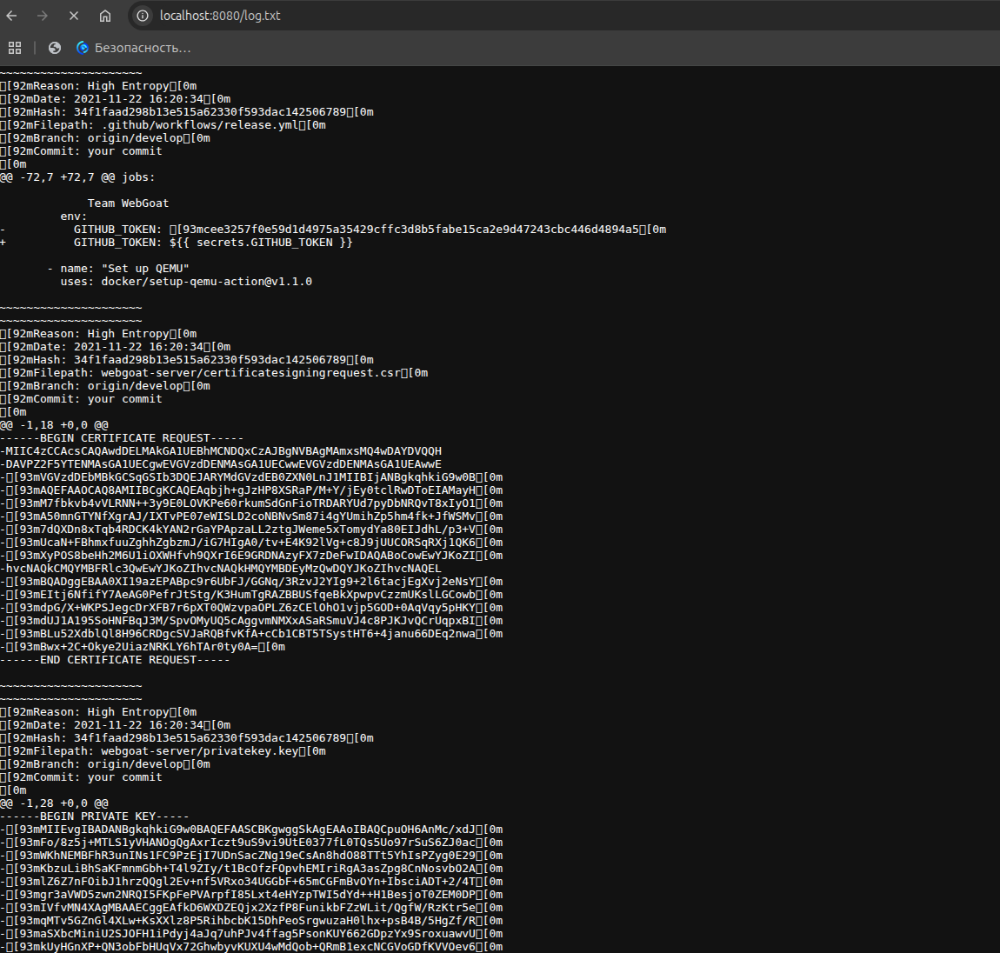
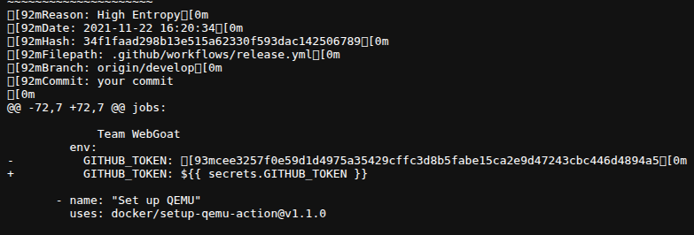
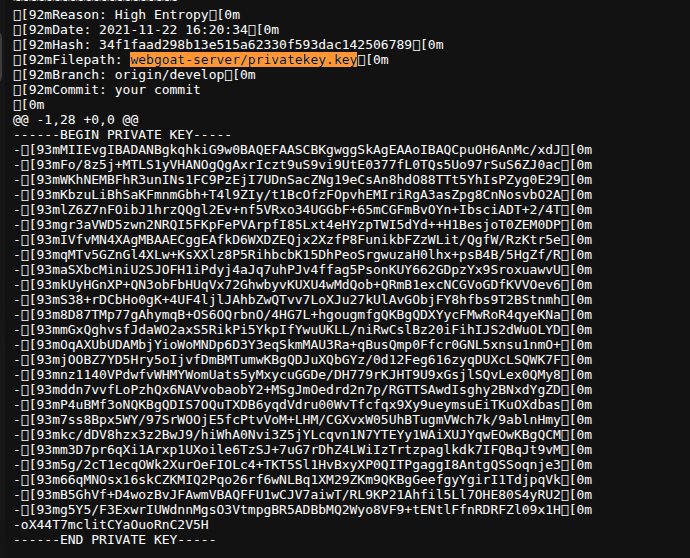
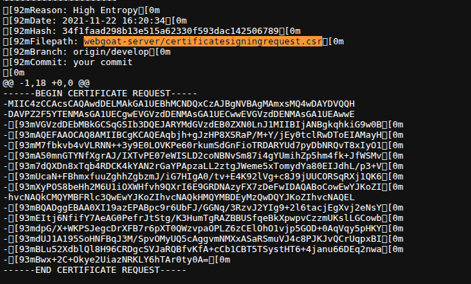
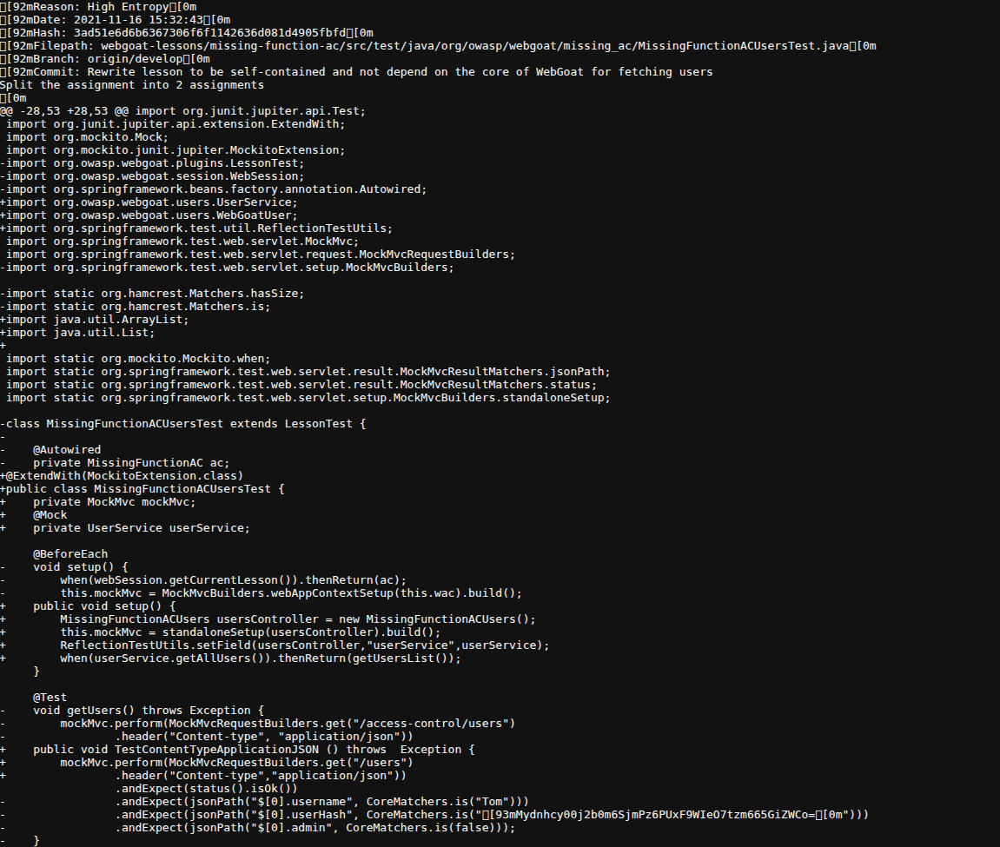
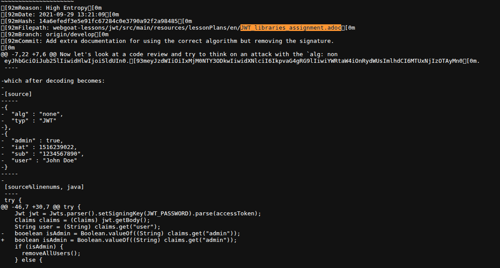

Запускаем http.server и смотрим отчет по секретам в браузере

Расположение секрета (файл/строка): .github/workflows/release.yml (Строка 72)
Почему найденое является секретом: Этот токен предоставляет полный административный доступ к репозиторию, механизмам автоматизации, публикации релизов и управлению инфраструктурой от лица конкретного пользователя или сервисного аккаунта.
Правильный способ хранения и устранение:
Токен должен быть немедленно отозван в панели управления GitHub.
Значения авторизационных токенов должны храниться в зашифрованном хранилище секретов самого репозитория или организации (GitHub Secrets).

Расположение секрета (файл/строка): webgoat-server/privatekey.key (Строки 1–28)
Почему найденое является секретом: Приватные ключи используются для расшифровки конфиденциальных данных, генерации цифровых подписей (Digital Signatures), авторизации по протоколам SSH/TLS или расшифровки сессионных токенов.
Правильный способ хранения и устранение: Текущий ключ и все связанные с ним сертификаты должны быть признаны недействительными и перевыпущены. Криптографические ключи никогда не должны находиться в репозитории кода. Их необходимо добавлять в специализированные менеджеры секретов корпоративного уровня, такие как HashiCorp Vault.

Расположение секрета (файл/строка): webgoat-server/certificatesigningrequest.csr (Строки 1–18)
Почему найденное является секретом:Внутри структуры запроса на подпись сертификата (CSR) был жестко зашит пароль проверки (Challenge Password), имеющий простое значение 1234 (закодировано в Base64 структуре как MIw...MDEyMzQwDQYJ...). Публикация сопутствующих дефолтных паролей и векторов аутентификации в репозиториях нарушает политики безопасности.
Правильный способ хранения и устранение:
Файлы генерации инфраструктурных запросов (.csr, .csr.pem) необходимо внести в файл .gitignore.
Использовать внутреннюю автоматизированную систему управления инфраструктурой открытых ключей (PKI) на базе HashiCorp Vault PKI secrets engine или Cert-manager в k8s.

Расположение секрета (файл/строка): webgoat-lessons/missing-function-ac/src/test/java/org/owasp/webgoat/missing_ac/MissingFunctionACUsersTest.java (Строки 28, 53)
Почему найденное является секретом: В коде тестов безопасности зафиксирована жесткая Base64-строка хэша пароля (cplTjehjI/e5ajqTxWaXhU5NW9UotJfXj+gcbPvfWWc=) и соль для проверки корректности ролевой модели доступа. Использование статических, предсказуемых криптографических солей и хэшей паролей в коде (даже тестовом) создает риски того, что аналогичные конфигурации могут быть скопированы разработчиками в реальную продуктивную среду.
Правильный способ хранения и устранение: Для юнит-тестов (Unit Testing) хэши и соли не должны быть захардкожены. Их следует генерировать динамически при каждом запуске тестового класса в блоках инициализации. сли тесты интеграционные и нужно сверяться с эталоном, параметры хэширования должны передаваться в тестовый контейнер через файлы конфигурации, которые не публикуются в открытый доступ.

Расположение секрета (файл/строка): webgoat-lessons/jwt/src/main/resources/lessonPlans/en/JWT_libraries_assignment.adoc (Строка ~7)
Почему найденное является секретом: В реальных проектах утечка аналогичных токенов или секретных ключей для их подписи приводит к компрометации пользовательских сессий и позволяет злоумышленникам подделывать права доступа.
Правильный способ хранения и устранение: При написании инструкций, руководств и README-файлов любые реальные или похожие на них токены, ключи и пароли должны быть заменены явными плейсхолдерами. Секретные ключи, используемые бэкендом для подписи и валидации JWT, должны храниться строго в переменных окружения на сервере приложений и никогда не упоминаться в текстовых документах.

BFG Repo-Cleaner — это легковесный специализированный консольный инструмент, разработанный как значительно более быстрая и удобная альтернатива стандартной команде git filter-branch.
Основное предназначение:
Внедрение автоматизированного поиска секретов является фундаментальным требованием методологии DevSecOps.
Gitleaks, TruffleHog или фреймворка pre-commit. На машине каждого разработчика настраивается триггер, который автоматически запускает сканирование измененных строк кода непосредственно в момент вызова команды git commit. Если утилита обнаруживает высокую энтропию или регулярное выражение, соответствующее приватному ключу, коммит блокируется локально.Автоматизация поиска секретов — это правильный и обязательный подход в современной разработке. Наиболее эффективной практикой является комбинация быстрых регулярных выражений на этапе pre-commit для разработчиков и глубокого сканирования всей кодовой базы в пайплайнах CI/CD.